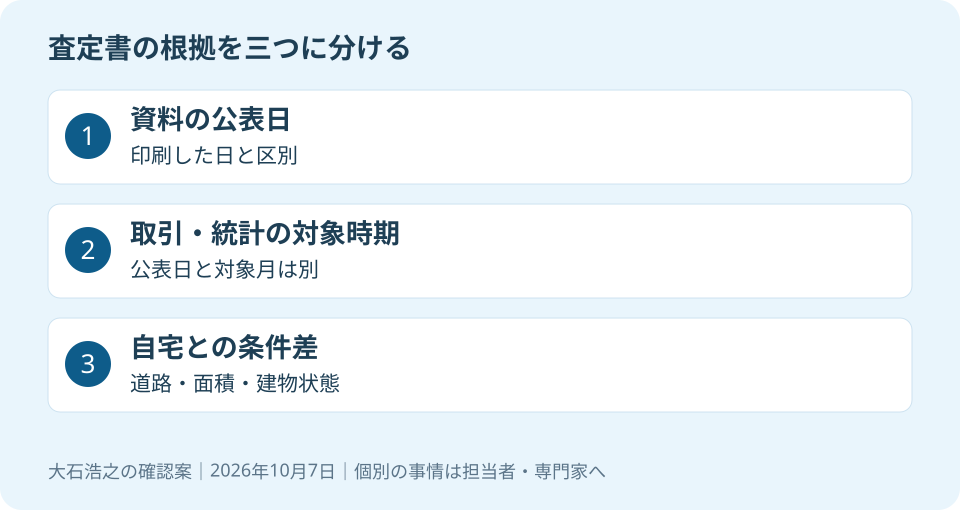

大石浩之（磐田市／不動産業）です。「2026年も相場が上がっているから、この査定です」と言われたら、どの資料の、いつの数字かを聞いてください。高い査定を否定するためではありません。売出価格を決める根拠を、売主自身が確認するためです。
不動産価格指数は、対象期間を確かめる
国土交通省は2026年9月28日、不動産価格指数の公表延期を告知しました。9月30日公開予定だった2026年6月・第2四半期分が対象です。算出プログラムの不具合により、原因確認と指数算出、精査等に時間を要すると説明しています。
同じ告知には、2026年4月以降に公開予定だった1～5月分、2025年第4四半期分、2026年第1四半期分も延期していると記載されています。新たな公表日は、決まり次第知らせるとしています。この記事では2026年10月7日に原文を確認しました。
確認時の更新情報欄の先頭は、2026年3月31日公表の2025年12月・第4四半期分でした。告知にある延期対象と、すでに掲載されている資料の対象表記を勝手に同一視しません。引用する資料そのものの対象月、系列、数値を確かめる必要があります。
この告知から、延期された期間の指数値や磐田市の上昇率は分かりません。私は、未公表の指数を値上がりの証拠には使いません。「公表が遅れているのだから、きっとこう動いた」という推測も、確認済みの数字と分けて扱います。
全国の指数と、一軒の査定価格は役割が違う
国土交通省の不動産価格指数は、年間約30万件の取引価格情報を基に、全国・ブロック別・都市圏別などの価格動向を指数化する統計です。個々の土地や建物の査定額そのものを示す資料ではありません。
指数の良さは、単発の売買だけでは分かりにくい広い範囲の動きを見る材料になる点です。私は、売主と市場の背景を共有する際に、資料の対象と時期が明確な統計を使う意味はあると考えます。一件の噂だけで話を進めずに済みます。
その上で注文したいのは、全国の動きを、そのまま磐田の一軒の値段へ置き換えないことです。道路の条件、敷地の形、建物の状態が違えば、同じ地域でも比較の仕方は変わります。統計を掲げるなら、その物件とのつながりまで説明してほしいのです。
意外な点ですが、指数の延期は、取引価格情報そのものの公開停止を告げる文章ではありません。同省のページには、所有権移転登記情報を基にした取引件数・面積も別に掲載されています。指数、個別の取引情報、取引件数は、同じ数字ではありません。
私は、公表延期を理由に査定相談を全部止める必要はないと考えます。使える資料と現地条件で検討し、確認できない指数は空欄にすればよいからです。統計がそろうまで家の管理や家族の予定まで止めると、相談の目的を見失います。

査定書では、三つの日付を分けて読む
査定書を受け取った売主は、査定書の作成日、根拠資料の公表日、取引や統計の対象時期を分けて確認してください。表紙が2026年10月でも、中で使う資料が10月の取引を示しているとは限りません。私が確認を勧めるのは、この時点の違いです。
| 日付の種類 | 担当者へ聞くこと |
|---|---|
| 査定書の作成日 | いつ、どの現地条件を前提に判断したか |
| 資料の公表日 | 誰が、いつ公開した資料か |
| 対象となる時期 | いつの取引、何月分の統計を示しているか |
例えば、2026年3月公表の資料に2025年12月分とあれば、2026年3月の取引価格としては扱いません。印刷した日が新しくても、対象となる時期は変わらないからです。資料名と対象時期を、査定書の余白に書き出すだけでも区別できます。
古い資料だから全部役に立たない、ということでもありません。私は、近い条件の事例が限られるなら、少し前の事例をどう補って使ったかを聞きます。時期の差を説明して使うことと、時期を示さず現在の相場として見せることには違いがあります。
査定額の出し方は、高い査定が出る仕組みと確認事項にもつながります。価格の高さだけで依頼先を決めず、比較事例と自宅の違いに答えてくれるかを見るのが私の提案です。
比較事例から、価格差を金額で説明してもらう
個別の査定では、比較した物件の価格の種類と、売却する家との条件差を確認します。広告に出た希望価格なのか、実際の取引を示す情報なのかが曖昧だと、数字を並べても比較の土台がそろいません。資料ごとに確認できる範囲を聞きます。
取引価格・成約価格・売出価格の違いを先に整理すると、担当者への質問が具体的になります。「近所でこの値段」という説明でも、何の価格を指すのかを一度言葉にしてもらってください。
数字は率だけで受け取らず、家一軒のお金に直します。仮に2,000万円の価格を5％動かすなら、差は100万円です。これは計算方法を示す仮定であり、磐田の上昇率でも査定例でもありません。100万円の差をつける理由が何かを聞くための換算です。
比較事例より道路が狭い、建物に修繕が必要、面積が違うといった条件を、どこで判断に反映したか聞きます。各条件が機械的に何％になるとは限りません。金額を細かく示していても、前提が未確認なら精度が高いとは判断できません。
地元の公的資料を見る場合も、2026年の磐田市の地価調査を読む記事と使い分けます。地点の評価を、そのまま自宅の売値へ掛け算するのではなく、場所と条件の違いを確認する入口にします。
私にも、資料が限られる地域で価格の幅をどこまで絞るか迷いがあります。だからこそ、比較できる材料と現地で確認した材料を分けます。幅が残るなら、その理由を説明したうえで、売出価格と見直す時期を家族と相談するほうが誠実だと考えます。
磐田の売主が今日聞く一問
磐田市・袋井市で査定書を受け取った売主は、「この価格の根拠資料は、いつの、何の価格ですか」と今日聞いてください。公表延期を知ったことを、担当者を責める材料にせず、資料の読み方を確認する質問に変えるのが私の案内です。
私はこう考えます。査定書を家族で見比べる場面なら、高い順に並べる前に、資料名、対象時期、比較した物件の条件を一列ずつ書き出します。根拠が書かれていない欄には、推測で数字を足さず、担当者への質問を書きます。これは実際の相談の再現ではなく、私の提案です。二社の価格が違うときにも、どの前提が違うかを聞ければ、次の判断材料が増えます。
売出価格を決める場合は、現地確認の前後で変わった条件を残します。内覧の反応を見て考え直す予定があるなら、何を見て見直すかも担当者と共有します。延期中の統計の再開だけを、売却判断の唯一の合図にはしません。
高い査定が正しいか間違いかは、公表延期だけでは決まりません。根拠となる別の取引や物件の特徴があるかもしれないからです。私は、未公表の指数を使った説明は訂正してもらい、価格そのものは資料と現地を見て改めて検討します。
介護施設の運営から不動産事業を始めた富士ヶ丘サービスのような地域の窓口では、介護と不動産を一体で相談できます。磐田・袋井で家族が困らない売却のため、私は資料の日付と家一軒の条件を確認して案内します。今日は売値の決断より、根拠資料の名前を一つ確かめる日で構いません。